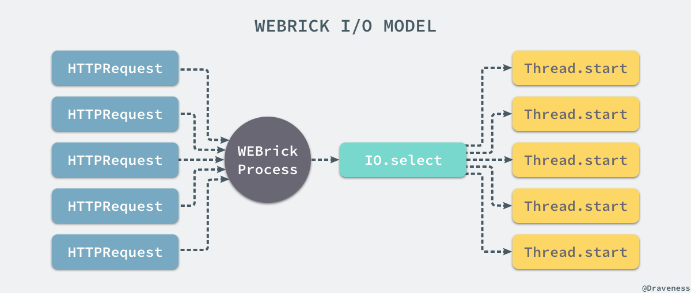

浅谈 WEBrick 的实现
这篇文章会介绍在开发环境中最常用的应用容器 WEBrick 的实现原理，除了通过源代码分析之外，我们也会介绍它的 IO 模型以及一些特点。
在 GitHub 上，WEBrick 从 2003 年的六月份就开始开发了，有着十几年历史的 WEBrick 的实现非常简单，总共只有 4000 多行的代码：
$ loc_counter .
40 files processed
Total 6918 lines
Empty 990 lines
Comments 1927 lines
Code 4001 lines
WEBrick 的实现
由于 WEBrick 是 Rack 中内置的处理器，所以与 Unicorn 和 Puma 这种第三方开发的 webserver 不同，WEBrick 的处理器是在 Rack 中实现的，而 WEBrick 的运行也都是从这个处理器的开始的。
module Rack
module Handler
class WEBrick < ::WEBrick::HTTPServlet::AbstractServlet
def self.run(app, options={})
environment = ENV['RACK_ENV'] || 'development'
default_host = environment == 'development' ? 'localhost' : nil
options[:BindAddress] = options.delete(:Host) || default_host
options[:Port] ||= 8080
@server = ::WEBrick::HTTPServer.new(options)
@server.mount "/", Rack::Handler::WEBrick, app
yield @server if block_given?
@server.start
end
end
end
end
我们在上一篇文章 谈谈 Rack 协议与实现 中介绍 Rack 的实现原理时，最终调用了上述方法，从这里开始大部分的实现都与 WEBrick 有关了。
在这里，你可以看到方法会先处理传入的参数比如：地址、端口号等等，在这之后会使用 WEBrick 提供的 HTTPServer 来处理 HTTP 请求，调用 mount 在根路由上挂载应用和处理器 Rack::Handler::WEBrick 接受请求，最后执行 #start 方法启动服务器。
初始化服务器
HTTPServer 的初始化分为两个阶段，一部分是 HTTPServer 的初始化，另一部分调用父类的 initialize 方法，在自己构造器中，会配置当前服务器能够处理的 HTTP 版本并初始化新的 MountTable 实例：
From: lib/webrick/httpserver.rb @ line 46:
Owner: #<Class:WEBrick::HTTPServer>
def initialize(config={}, default=Config::HTTP)
super(config, default)
@http_version = HTTPVersion::convert(@config[:HTTPVersion])
@mount_tab = MountTable.new
if @config[:DocumentRoot]
mount("/", HTTPServlet::FileHandler, @config[:DocumentRoot],
@config[:DocumentRootOptions])
end
unless @config[:AccessLog]
@config[:AccessLog] = [
[ $stderr, AccessLog::COMMON_LOG_FORMAT ],
[ $stderr, AccessLog::REFERER_LOG_FORMAT ]
]
end
@virtual_hosts = Array.new
end
在父类 GenericServer 中初始化了用于监听端口号的 Socket 连接：
From: lib/webrick/server.rb @ line 185:
Owner: #<Class:WEBrick::GenericServer>
def initialize(config={}, default=Config::General)
@config = default.dup.update(config)
@status = :Stop
@listeners = []
listen(@config[:BindAddress], @config[:Port])
if @config[:Port] == 0
@config[:Port] = @listeners[0].addr[1]
end
end
每一个服务器都会在初始化的时候创建一系列的 listener 用于监听地址和端口号组成的元组，其内部调用了 Utils 模块中定义的方法：
From: lib/webrick/server.rb @ line 127:
Owner: #<Class:WEBrick::GenericServer>
def listen(address, port)
@listeners += Utils::create_listeners(address, port)
end
From: lib/webrick/utils.rb @ line 61:
Owner: #<Class:WEBrick::Utils>
def create_listeners(address, port)
sockets = Socket.tcp_server_sockets(address, port)
sockets = sockets.map {|s|
s.autoclose = false
ts = TCPServer.for_fd(s.fileno)
s.close
ts
}
return sockets
end
module_function :create_listeners
在 .create_listeners 方法中调用了 .tcp_server_sockets 方法由于初始化一组 Socket 对象，最后得到一个数组的 TCPServer 实例。
挂载应用
在使用 WEBrick 启动服务的时候，第二步就是将处理器和 Rack 应用挂载到根路由下：
@server.mount "/", Rack::Handler::WEBrick, app
#mount 方法其实是一个比较简单的方法，因为我们在构造器中已经初始化了 MountTable 对象，所以这一步只是将传入的多个参数放到这个表中：
From: lib/webrick/httpserver.rb @ line 155:
Owner: WEBrick::HTTPServer
def mount(dir, servlet, *options)
@mount_tab[dir] = [ servlet, options ]
end
MountTable 是一个包含从路由到 Rack 处理器一个 App 的映射表：
当执行了 MountTable 的 #compile 方法时，上述的对象就会将表中的所有键按照加入的顺序逆序拼接成一个如下的正则表达式用来匹配传入的路由：
^(/|/admin|/user)(?=/|$)
上述正则表达式在使用时如果匹配到了指定的路由就会返回 $& 和 $' 两个部分，前者表示整个匹配的文本，后者表示匹配文本后面的字符串。
启动服务器
在 Rack::Handler::WEBrick 中的 .run 方法先初始化了服务器，将处理器和应用挂载到了根路由上，在最后执行 #start 方法启动服务器：
From: lib/webrick/server.rb @ line 152:
Owner: WEBrick::GenericServer
def start(&block)
raise ServerError, "already started." if @status != :Stop
@status = :Running
begin
while @status == :Running
begin
if svrs = IO.select([*@listeners], nil, nil, 2.0)
svrs[0].each{ |svr|
sock = accept_client(svr)
start_thread(sock, &block)
}
end
rescue Errno::EBADF, Errno::ENOTSOCK, IOError, StandardError => ex
rescue Exception => ex
raise
end
end
ensure
cleanup_listener
@status = :Stop
end
end
由于原方法的实现比较复杂不容易阅读，在这里对方法进行了简化，省略了向 logger 中输出内容、处理服务的关闭以及执行回调等功能。
我们可以理解为上述方法通过 .select 方法对一组 Socket 进行监听，当有消息需要处理时就依次执行 #accept_client 和 #start_thread 两个方法处理来自客户端的请求：
From: lib/webrick/server.rb @ line 254:
Owner: WEBrick::GenericServer
def accept_client(svr)
sock = nil
begin
sock = svr.accept
sock.sync = true
Utils::set_non_blocking(sock)
rescue Errno::ECONNRESET, Errno::ECONNABORTED,
Errno::EPROTO, Errno::EINVAL
rescue StandardError => ex
msg = "#{ex.class}: #{ex.message}\n\t#{ex.backtrace[0]}"
@logger.error msg
end
return sock
end
WEBrick 在 #accept_client 方法中执行了 #accept 方法来得到一个 TCP 客户端 Socket，同时会通过 set_non_blocking 将该 Socket 变成非阻塞的，最后在方法末尾返回创建的 Socket。
在 #start_thread 方法中会开启一个新的线程，并在新的线程中执行 #run 方法来处理请求：
From: lib/webrick/server.rb @ line 278:
Owner: WEBrick::GenericServer
def start_thread(sock, &block)
Thread.start {
begin
Thread.current[:WEBrickSocket] = sock
run(sock)
rescue Errno::ENOTCONN, ServerError, Exception
ensure
Thread.current[:WEBrickSocket] = nil
sock.close
end
}
end
处理请求
所有的请求都不会由 GenericServer 这个通用的服务器来处理，它只处理通用的逻辑，对于 HTTP 请求的处理都是在 HTTPServer#run 中完成的：
From: lib/webrick/httpserver.rb @ line 69:
Owner: WEBrick::HTTPServer
def run(sock)
while true
res = HTTPResponse.new(@config)
req = HTTPRequest.new(@config)
server = self
begin
timeout = @config[:RequestTimeout]
while timeout > 0
break if sock.to_io.wait_readable(0.5)
break if @status != :Running
timeout -= 0.5
end
raise HTTPStatus::EOFError if timeout <= 0 || @status != :Running
raise HTTPStatus::EOFError if sock.eof?
req.parse(sock)
res.request_method = req.request_method
res.request_uri = req.request_uri
res.request_http_version = req.http_version
self.service(req, res)
rescue HTTPStatus::EOFError, HTTPStatus::RequestTimeout, HTTPStatus::Error => ex
res.set_error(ex)
rescue HTTPStatus::Status => ex
res.status = ex.code
rescue StandardError => ex
res.set_error(ex, true)
ensure
res.send_response(sock) if req.request_line
end
break if @http_version < "1.1"
end
end
对 HTTP 协议了解的读者应该能从上面的代码中看到很多与 HTTP 协议相关的东西，比如 HTTP 的版本号、方法、URL 等等，上述方法总共做了三件事情，等待监听的 Socket 变得可读，执行 #parse 方法解析 Socket 上的数据，通过 #service 方法完成处理请求的响应，首先是对 Socket 上的数据进行解析：
From: lib/webrick/httprequest.rb @ line 192:
Owner: WEBrick::HTTPRequest
def parse(socket=nil)
@socket = socket
begin
@peeraddr = socket.respond_to?(:peeraddr) ? socket.peeraddr : []
@addr = socket.respond_to?(:addr) ? socket.addr : []
rescue Errno::ENOTCONN
raise HTTPStatus::EOFError
end
read_request_line(socket)
if @http_version.major > 0
# ...
end
return if @request_method == "CONNECT"
return if @unparsed_uri == "*"
begin
setup_forwarded_info
@request_uri = parse_uri(@unparsed_uri)
@path = HTTPUtils::unescape(@request_uri.path)
@path = HTTPUtils::normalize_path(@path)
@host = @request_uri.host
@port = @request_uri.port
@query_string = @request_uri.query
@script_name = ""
@path_info = @path.dup
rescue
raise HTTPStatus::BadRequest, "bad URI `#{@unparsed_uri}'."
end
if /close/io =~ self["connection"]
# deal with keep alive
end
end
由于 HTTP 协议本身就比较复杂，请求中包含的信息也非常多，所以在这里用于解析 HTTP 请求的代码也很多，想要了解 WEBrick 是如何解析 HTTP 请求的可以看 httprequest.rb 文件中的代码，在处理了 HTTP 请求之后，就开始执行 #service 响应该 HTTP 请求了：
From: lib/webrick/httpserver.rb @ line 125:
Owner: WEBrick::HTTPServer
def service(req, res)
servlet, options, script_name, path_info = search_servlet(req.path)
raise HTTPStatus::NotFound, "`#{req.path}' not found." unless servlet
req.script_name = script_name
req.path_info = path_info
si = servlet.get_instance(self, *options)
si.service(req, res)
end
在这里我们会从上面提到的 MountTable 中找出在之前注册的处理器 handler 和 Rack 应用：
From: lib/webrick/httpserver.rb @ line 182:
Owner: WEBrick::HTTPServer
def search_servlet(path)
script_name, path_info = @mount_tab.scan(path)
servlet, options = @mount_tab[script_name]
if servlet
[ servlet, options, script_name, path_info ]
end
end
得到了处理器 handler 之后，通过 .get_instance 方法创建一个新的实例，这个方法在大多数情况下等同于初始化方法 .new，随后调用了该处理器 Rack::WEBrick::Handler 的 #service 方法，该方法是在 rack 工程中定义的：
From: rack/lib/handler/webrick.rb @ line 57:
Owner: Rack::Handler::WEBrick
def service(req, res)
res.rack = true
env = req.meta_vars
env.delete_if { |k, v| v.nil? }
env.update(
# ...
RACK_URL_SCHEME => ["yes", "on", "1"].include?(env[HTTPS]) ? "https" : "http",
# ...
)
status, headers, body = @app.call(env)
begin
res.status = status.to_i
headers.each { |k, vs|
# ...
}
body.each { |part|
res.body << part
}
ensure
body.close if body.respond_to? :close
end
end
由于上述方法也涉及了非常多 HTTP 协议的实现细节所以很多过程都被省略了，在上述方法中，我们先构建了应用的输入 env 哈希变量，然后通过执行 #call 方法将控制权交给 Rack 应用，最后获得一个由 status、headers 和 body 组成的三元组；在接下来的代码中，分别对这三者进行处理，为这次请求『填充』一个完成的 HTTP 请求。
到这里，最后由 WEBrick::HTTPServer#run 方法中的 ensure block 来结束整个 HTTP 请求的处理：
From: lib/webrick/httpserver.rb @ line 69:
Owner: WEBrick::HTTPServer
def run(sock)
while true
res = HTTPResponse.new(@config)
req = HTTPRequest.new(@config)
server = self
begin
# ...
ensure
res.send_response(sock) if req.request_line
end
break if @http_version < "1.1"
end
end
在 #send_reponse 方法中，分别执行了 #send_header 和 #send_body 方法向当前的 Socket 中发送 HTTP 响应中的数据：
From: lib/webrick/httpresponse @ line 205:
Owner: WEBrick::HTTPResponse
def send_response(socket)
begin
setup_header()
send_header(socket)
send_body(socket)
rescue Errno::EPIPE, Errno::ECONNRESET, Errno::ENOTCONN => ex
@logger.debug(ex)
@keep_alive = false
rescue Exception => ex
@logger.error(ex)
@keep_alive = false
end
end
所有向 Socket 中写入数据的工作最终都会由 #_write_data 这个方法来处理，将数据全部写入 Socket 中：
From: lib/webrick/httpresponse @ line 464:
Owner: WEBrick::HTTPResponse
def _write_data(socket, data)
socket << data
end
从解析 HTTP 请求、调用 Rack 应用、创建 Response 到最后向 Socket 中写回数据，WEBrick 处理 HTTP 请求的部分就结束了。
I/O 模型
通过对 WEBrick 源代码的阅读，我们其实已经能够了解整个 webserver 的工作原理，当我们启动一个 WEBrick 服务时只会启动一个进程，该进程会在指定的 ip 和端口上使用 .select 监听来自用户的所有 HTTP 请求：

当 .select 接收到来自用户的请求时，会为每一个请求创建一个新的 Thread 并在新的线程中对 HTTP 请求进行处理。
由于 WEBrick 在运行时只会启动一个进程，并没有其他的守护进程，所以它不够健壮，不能在发生问题时重启持续对外界提供服务，再加上 WEBrick 确实历史比较久远，代码的风格也不是特别的优雅，还有普遍知道的内存泄漏以及 HTTP 解析的问题，所以在生产环境中很少被使用。
虽然 WEBrick 有一些性能问题，但是作为 Ruby 自带的默认 webserver，在开发阶段使用 WEBrick 提供服务还是没有什么问题的。
总结
WEBrick 是 Ruby 社区中老牌的 webserver，虽然至今也仍然被广泛了解和使用，但是在生产环境中开发者往往会使用更加稳定的 Unicorn 和 Puma 代替它，我们选择在这个系列的文章中介绍它很大原因就是 WEBrick 的源代码与实现足够简单，我们很快就能了解一个 webserver 到底具备那些功能，在接下来的文章中我们就可以分析更加复杂的 webserver、了解更复杂的 IO 模型与实现了。